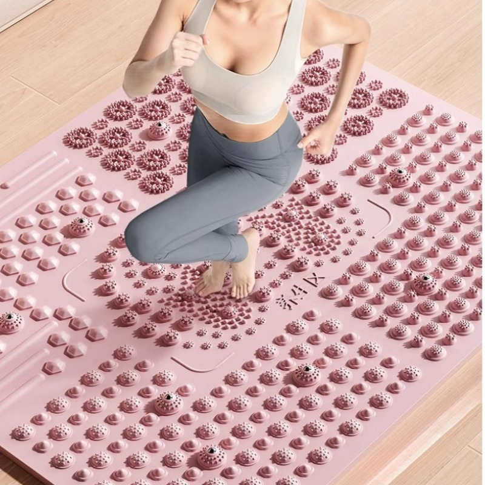

💰
#1 Best Value
Ultra-slow Running Foot Massage Pad, Indoor in-place Running...
$27.92
Was $39.89 · 30% off
💰 Best Value

As our best value pick, this Ultra-slow Running Foot Massage Pad, Indoor in-place Running Pressure Board Pad, Foot Sole Meridian Unblocking Acupressure Mats delivers reliable performance at $27.92 with 30% off the original $39.89.
Key Specifications
Type
Acupressure Pad
Material
TPE + Plastic
Design
Ultra-slow Running
Size
Standard
Use Case
Active Massage
Price
$27.92
Pros
- Unique slow-running design for active massage
- 30% off original price
- Good stimulation intensity
- Versatile for feet and hands
Cons
- Unbranded manufacturer
- May be too intense for beginners